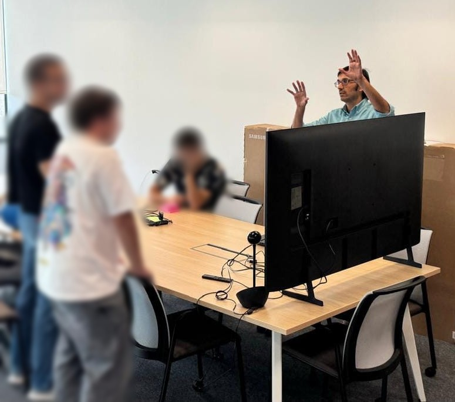

About me
I am a Computer Engineer specialized in Robotics, a generalist roboticist, and I have been working in this field since I finished my first degree in 2002. I hold a PhD in Robotics and Artificial Intelligence (2025).
My interests include kinematics and dynamics, motion planning, software architectures for robots, mobile manipulators, cognitive robotics, learning, computational geometry and perception systems.
My recent work focuses on behavior trees and how robots can learn them, and on task planning.
